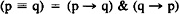
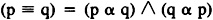
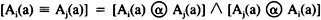
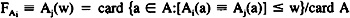
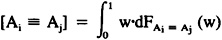
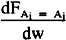
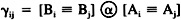
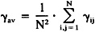
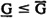

by Abraham Kandel
CRC Press, CRC Press LLC
ISBN: 084934297x Pub Date: 11/01/91
|
|
Fuzzy Expert Systems
by Abraham Kandel CRC Press, CRC Press LLC ISBN: 084934297x Pub Date: 11/01/91 |
| Previous | Table of Contents | Next |
In this section we will present how, without any calculations of the fuzzy relation of the knowledge base, one can detect a situation in which this reduction procedure may be applied.
As before, we discuss the rule-based system where a knowledge is of a format of condition-action statements. For clarity, we consider two of the rules, the ith and the jth one, i,j = 1,2,…,N, i ≠ j and we discuss four cases:
Thus, we need a mechanism that allows us to detect the situation 4. At the beginning one has to express precisely how nearness of the fuzzy relations (conditions) and fuzzy sets (actions) can be evaluated. Here we may give a lot of approaches; all of them generate indices taking their maximal values for identical fuzzy sets, i.e., equal (but not necessarily) to 1.0, approaching to the minimum (i.e., zero) for completely different fuzzy sets. An example of this index, borrowed by multivalued logic, is the following. We recall that for truth values of two propositions “p” and “q”, p, q ∈ [0,1], a degree, to which extent they are equal to each other, is given by:

where “→” is treated as a Godelian implication “α”, namely, (p α q) = 1 if p ≤ q, (p α q) = q if p > q and “&” is treated as minimum. Then this expression reads as:

For two fuzzy sets (relations) of a universe of discourse A, we may speak about a degree to which the membership functions of Ai, Aj at some elements a ∈ A are equal to each other:

In order to obtain a global overview to which extent Ai is equal to Aj, we calculate the values of [Ai(a) ≡ Aj(a)] for all a ∈ A building an empirical probability distribution function defined as:

that one can utilize, for instance, to calculate:


attains its maximum.
The same computations are performed for the fuzzy sets Bi and Bj. It is easily seen that an expression:

can serve as a suitable index for detecting whether the rules have to be generalized. Note that this index takes quite high values for situations 1—3, and reaches values nearly zero for case 4. Performing the calculations for all the pairs of indices, we arrange the results in a matrix form Γ = [γij], i = 1,2,…,N. Obviously, γii = 1.0, γ ij γ= γji but N(N - 1)/2 elements of Γ must be calculated.
Again, to get a global view to which extent the rules viewed as the entire collection should be generalized, i.e., the condition space reduced, we may take any synthetic index, perhaps an average value of γij′ seems to be a reasonable choice:

This value may indicate a need to reduce the condition space. The proposal just presented, also has been studied extensively in Reference 8.
At this point both of the methods given so far can be conveniently treated as complementary ones. The test for rule generalization enables us to detect a situation where a requirement is to reduce the condition space without any explicit knowledge of the fuzzy relation R. Moreover, the second method described here points out which particular rules are responsible for such a status of the knowledge base. Nevertheless, this approach does not indicate clearly which subspaces of the conditions space should be formed. The information necessary for this purpose comes from applying the results of Section II.
First, we observe that the obvious inequality  holds, where it is understood that G (aij, bk) ≤ (aij, bk) for any j = 1,2,…,N and k = 1,2,…,m. For simplicity, we put G(aij, bk) = Gj and  (aij, bk) = j for any j = 1,2,…,N.
(aij, bk) = j for any j = 1,2,…,N.
| Previous | Table of Contents | Next |